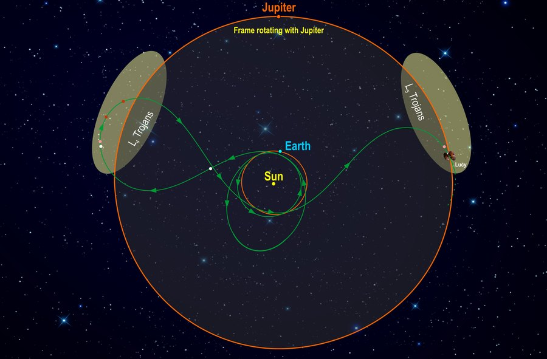

Москва · понедельникВыпуск из Москвы и из-под землиЦена: бесплатно
TheSéance Times
газета для тех, кто разговаривает с прошлым
№ 006 · 2 ноября 2026Шестой выпускЧтение: 13 минут
Машина · главное
Разрешение на чтение
Тридцатого октября OpenAI согласилась уважать общий сигнал в robots.txt — одну строку вместо полусотни правил для каждого сборщика. В тот же день в IETF лёг черновик, где эта строка описана точно. Внедрять обещают «в ближайшие месяцы»: то есть пока это не защита, а заявление о намерениях.
Событие — 30 октября 2026 · OpenAI, IETF AI Preferences · 6 минут
Всё началось с бытовой усталости. Сайт, который не хочет отдавать тексты на обучение моделей, вынужден был годами вести список: этот сборщик — нельзя, тот — нельзя, третий переименовался и снова нельзя. Каждый провайдер придумывал свой токен, каждая правка robots.txt превращалась в переговоры с чужим парсером. Тридцатого октября OpenAI написала, что будет соблюдать общий сигнал — один на всю отрасль, — и что работу над ним ведёт рабочая группа IETF по «предпочтениям ИИ».
Технически всё оказалось проще, чем звучит. В тот же день в IETF появился черновик draft-kelley-aipref-training-preference-signal-00; автор — Кевин Келли из Anthropic, документ датирован 30 октября 2026 года и истекает 3 мая 2027-го, если не станет стандартом. В нём нет ни новых директив, ни новой грамматики: берётся обычная группа robots.txt, только в строке User-Agent стоит специальный токен.
Читается это буквально: «на всём сайте обучению не место, кроме папки с пресс-материалами — её берите». Disallow под этим токеном означает «против обучения», Allow — «за». Если строки с токеном в файле нет вообще, значит владелец сайта мнения не высказал: не «можно», а «неизвестно». Три детали из черновика важнее остального. Токен сравнивается точно, с точностью до регистра, а звёздочка (User-Agent: *) под него не подходит — то есть общее правило сайта автоматически не превращается в разрешение или запрет. Действует привычный приоритет самого длинного совпадения пути. И — самое честное место документа — прямо сказано: токен не является директивой о поведении сборщика.
«Турок» Вольфганга фон Кемпелена: автомат, который играл в шахматы и внутри которого сидел человек. Гравюра из книги Йозефа Ракница, 1789 год. Общественное достояние, Wikimedia Commons.
Теперь про сроки. Формулировка OpenAI: сигнал намерены внедрить «в ближайшие месяцы» и отдельно сообщить о деталях. Значит, на сегодня правило не работает — оно обещано. Компания также призвала других провайдеров последовать примеру, и это единственный механизм, который у такого сигнала есть: не закон, а присоединение. И, чтобы картина была полной, в тот же день вышел второй текст OpenAI — «Fair use benefits everyone», где компания защищает право учиться на чужом контенте как добросовестное использование. Два документа рядом читаются без противоречия: разрешение отказаться и защита права брать — это не взаимоисключающие вещи, а две стороны одной позиции. Отказ уважают, но по умолчанию считают, что брать можно.
Дата30 октября 2026 года — обе публикации в один день.
Документdraft-kelley-aipref-training-preference-signal-00, автор Кевин Келли (Anthropic), рабочая группа IETF AI Preferences; истекает 3 мая 2027.
Токен__usage_ai-training в строке User-Agent обычной группы robots.txt.
ГрамматикаНе меняется: те же Disallow и Allow, тот же приоритет длиннейшего пути (RFC 9309).
СтатусOpenAI — «внедрим в ближайшие месяцы»; участие добровольное, других провайдеров приглашают присоединиться.
Чего сигнал не делаетНе запрещает обход, не отменяет уже собранное, не имеет силы закона.
Что здесь факт, а что — обещание
Факт: дата публикации обеих записей, существование черновика IETF с указанным автором и номером, синтаксис токена, независимость от правил обхода, формулировка «в ближайшие месяцы».
Обещание: что сигнал действительно заработает и что его будут соблюдать все крупные провайдеры. Насколько широко поддержан сигнал за пределами OpenAI, из первоисточников на момент выпуска не следует — в блоге OpenAI речь о собственном намерении и приглашении остальным. Чего нет: опубликованного списка компаний, которые уже пообещали соблюдать токен, и даты вступления в силу.
Одна строка вместо полусотни — это удобство. Разрешение — это не замок: замок ставит тот, кто и так не заходит.
Редакционный вывод
Для человека, который публикует тексты сам, практическая часть выглядит так. У вас есть сайт и есть книги; сайт — единственное место, где вы распоряжаетесь правилами. Черновик даёт форму ответа: либо в открытом robots.txt появляется группа с токеном и перечнем закрытых путей, либо её нет — и тогда вы просто один из миллионов сайтов без мнения. Обе позиции допустимы, но вторая означает, что решение за вас примет чужой парсер.
И главная оговорка, которую не пишут в пресс-релизах. Предпочтение применяется к тому, что собирают после его публикации. Всё, что уже в индексах и датасетах, остаётся там: сигнал в robots.txt — это не удаление и не отзыв лицензии. Он работает как табличка на калитке, а не как замок в двери. Именно поэтому вокруг него и идёт весь спор: вежливая просьба удобна обеим сторонам ровно до тех пор, пока её выгодно исполнять. Формально новая строка — шаг к ясности. Практически — тест на то, сколько стоит вежливость в отрасли, где один обучающий проход по чужому сайту не стоит ничего.
Сеанс
Второй материал · 5 минут
Призрак из генератора
Охотники за духами получили нейросеть: приложение за подписку читает сигналы магнитометра телефона, переводит их в слова и рисует картинки — «мир иной» теперь приходит в виде изображения, сгенерированного на устройстве. У приложения больше миллиона скачиваний. У скептиков один вопрос, и он убийственный.
Публикация — 30 октября 2026 · The Guardian · 5 минут
«Миссис Бентли и дух её умершей сестры»: спиритическая фотография из собрания Национального музея науки и медиа, Великобритания. Без известных ограничений, Wikimedia Commons.
Эми Уэйн и Джаррад Каттинг ходят по пустым домам, нагрузившись техникой собственной сборки: телефон, датчики, приложение, которое сопоставляет их показания со словами из базы. Их последняя разработка называется GhostTube Seer и объявлена «первым в мире ИИ-инструментом для охоты за призраками». По данным страницы в Google Play, о которых пишет Guardian, скачиваний больше миллиона; доступ — по платной подписке.
Работает это так. Магнитометр телефона ловит колебания поля, приложение переводит их в слова и фразы, а потом отдаёт генератору изображений. В одном из роликов на канале Amy’s Crypt пара сидит в винчестерском «Доме тайн» и спрашивает: «Можете показать, что здесь происходило?» Приложение выдаёт абстрактную смесь деревянных стен и золотых штор, потом женщину в чёрной шали, потом стаю белых птиц. Каждое изображение тут же получает толкование — под историю дома.
Дальше начинается то, ради чего этот сюжет стоит читать в газете о разговорах с прошлым. Спиритическая фотография XIX века тоже была технической новинкой: новая оптика, новые пластины, новая проявка — и на снимках появлялись «духи». Тогдашний аргумент в защиту был ровно один: клише не подделать. Сегодняшний аргумент — обратный по форме и тот же по сути: картинку рисует модель, а модель не ошибается, она просто работает. Проверять по-прежнему нечего: у сигнала магнитометра нет эталона, у сгенерированного лица нет автора.
Исследователь паранормального и автор книг Алекс Мацуо, работающая днём в технологической отрасли, формулирует это без мистики: «Если вы используете ИИ, вы используете какую-то языковую модель — на каких данных вы её обучаете, чтобы определить, что такое призрак?» В том же разговоре она добавляет вопросы, которых обычно не задают: не нарисован ли призрак из чужого копирайта и не превращается ли охота за духами в «паранормальную эхо-камеру», где приложение подтверждает то, во что вы пришли поверить.
Отрасль при этом не едина. Параллельно существуют приложения вроде Spirit Phone Innovations от исследователя Шона Остина — там ИИ анализирует аудиосигналы в поисках EVP, «электронного голоса» на записи. А форумы, где раньше собирались страшные истории, начали закрываться от машин: r/Nosleep, по данным Guardian, ввёл строгий запрет на материалы, сгенерированные ИИ. Получается аккуратная симметрия: люди, профессионально ищущие нечеловеческое, делятся на тех, кто впустил в ремесло генератор, и тех, кто считает, что после этого искать больше нечего.
Спиритическая фотография требовала темноты, потому что свет мешал духам. Генератору темнота не нужна — он сам объяснит, почему проверка невозможна.
Редакционный вывод
Самое честное в этом сюжете — причина, по которой люди вообще берут телефон и идут в пустой дом. «Многие приходят в охоту за призраками после травмы или утраты», — говорит Мацуо; для многих это способ пережить потерю. Именно поэтому спрос не исчезнет ни с нейросетью, ни без неё: покупают не доказательство, а разговор. Вопрос только в том, кто ведёт разговор — мёртвый, живой или модель, обученная на их переписке.
Инструментарий
Цены · 2 ноября
Сто раз дороже
OpenAI · 2 ноября 2026
Прайс-лист OpenAI сейчас — это не список моделей, а лестница с разбросом в сто раз. За миллион токенов на стандартном тарифе, вход и выход: gpt-6-luna — 0,10 и 0,50 доллара; gpt-6.1-terra — 1 и 5; gpt-6.1-sol — 2 и 10; gpt-6-astra — 10 и 50. Чтение из кэша дешевле входа ровно в десять раз по всей лестнице: 0,01, 0,05, 0,10, 1,00. Запись в кэш продаётся двумя сроками: тридцать минут и двенадцать часов, и второй вдвое дороже — у terra 1,25 против 2,50, у astra 12,50 против 25,00.
Второе изменение вступило в силу вчера: с 1 ноября 2026 года эндпоинты с обработкой для государственных требований (FedRAMP) тоже идут с надбавкой 10%, как и региональные. Плюс в том же примечании: акционная цена GPT-5.6 Sol действует как минимум до 21 ноября — то есть ещё три недели, после чего счёт изменится без отдельного анонса.
РазбросВход: 0,10 против 10,00 — стократная разница между младшей и старшей моделью.
КэшЧтение из кэша — одна десятая цены входа на всех четырёх ступенях.
Запись30 минут против 12 часов: 0,01/0,05/0,10/1,00 против 0,125/1,25/2,50/12,50.
НадбавкиРегионы — +10%; с 1 ноября 2026 — и FedRAMP +10%.
СрокАкционная цена GPT-5.6 Sol — минимум до 21 ноября 2026.
Практический вывод для того, кто платит за токены из своего кармана, а не из бюджета отдела. В ежедневной работе цена решается не выбором «самой умной» модели, а распределением задач: пересказ, чистка текста, извлечение фактов и рутинные правки на младшей ступени стоят на порядок меньше, и разница между счётом в триста рублей и в три тысячи — это ровно она. Старшие модели нужны там, где ошибка дороже токенов: разбор кода, длинные цепочки агентов, юридически чувствительный текст. И главный рычаг здесь не модель, а кэш: если система шлёт один и тот же длинный контекст каждые десять минут, кэширование экономит девяносто процентов — больше, чем любой переход на модель подешевле.
Небо
Космос · 28 октября
Первая остановка
NASA · 28 октября 2026
Двадцать восьмого октября NASA сообщила: зонд Lucy вошёл в область троянских астероидов Юпитера — первым аппаратом в истории. Позади 2,2 миллиарда миль с 16 октября 2021 года. Границы у космоса нет, поэтому «вход» определяют по расчётам: инженеры отслеживают положение аппарата по радиосигналу и снимкам окружающих звёзд и знают, что он подошёл к точке Лагранжа L4.
Это один из двух «островов стабильности»: тысячи астероидов идут по орбите Юпитера, удерживаемые совместным притяжением Солнца и планеты. Группа у L4 бежит впереди Юпитера, группа у L5 — следом. Расстояние от троянцев до самого Юпитера примерно равно расстоянию от Юпитера до Солнца — около 484 миллионов миль; друг от друга камни в среднем отделены шестью миллионами миль. Поэтому для Lucy они пока — точки света на фоне звёзд.

Маршрут Lucy: от пояса астероидов к точке L4, где аппарат ведёт наблюдения перед сближениями. Визуализация NASA, общественное достояние; Wikimedia Commons.
Календарь известен заранее и расписан по именам: первая встреча — с Еврибатом 11 августа 2027 года, затем Полимела (сентябрь 2027), Левк (апрель 2028), Орус (ноябрь 2028). Потом аппарат вернётся к Земле в 2030-м за третьим гравитационным манёвром и уйдёт к замыкающей группе, где в марте 2033-го исследует пару Патрокл и Менетий.
Смысл всей затеи в химии. Троянцы считаются остатками того стройматериала, из которого 4,5 миллиарда лет назад собирались планеты; их состав — это состав ранней Солнечной системы, не переплавленный внутри больших тел. Восемь астероидов, которые посмотрит Lucy, — выборка из этого склада. И одна деталь, которая нравится больше всех цифр: аппарат назван в честь австралопитека, а его инструменты — по песне Beatles «Lucy in the Sky with Diamonds». Через пять лет полёта он наконец там, где алмазы действительно летают по небу.
Книги
Готика · 20 октября
Семь лет после Рождества
Titan Books · 20 октября 2026
Двадцатого октября Titan Books выпустила «Ebenezer Scrooge: Ghost Hunter» — роман Дж. С. Барнса на 288 страниц, в твёрдом переплёте, 18,99 фунта или 27,99 доллара. Затея ровно та, что написана на обложке: действие идёт в 1850 году, через семь лет после событий «Рождественской песни». Скрудж к этому времени ведёт жизнь филантропа, но у него есть вторая, менее известная сторона: те, кого мучают духи, знают его как человека, который умеет избавлять от беспокойных мертвецов.
Завязка в духе жанра: Луиза Фелл приглашает его в фамильный дом на востоке Англии, и чем глубже он копает, тем ближе к собственным призракам — прошлого, настоящего и того, что ещё не наступило. Компанию ему составляет капитан Эмброуз, «доверенный спутник и друг». Издатель ставит книгу в ряд с Лаурой Пёрселл и Кейт Гриффин, то есть с современной викторианской готикой, а не с юмористическим фэнтези.
Литературно это любопытно одной механикой. В оригинале Диккенса Скруджа перевоспитали три привидения — то есть герой прошёл курс обучения общению с мёртвыми и вышел из него другим человеком. Продолжение делает из этого профессию: кто, если не он, знает, как разговаривать с тем, что приходит ночью и требует изменить жизнь. Логика абсолютно жанровая и абсолютно коммерческая: у готики есть готовый герой, и его не надо выдумывать заново.
Тридцать первого октября — в Самайн, в ночь, когда граница между мирами считается тонкой, — немецкий дуэт Boarhammer сам выпустил третий полный альбом «III: Instruments of Fungal Intent». Восемь песен, сорок восемь минут, кассета и цифра; кассетный тираж собран вручную и ограничен 111 копиями. Ни лейбла, ни дистрибуции, ни рекламного бюджета: только Bandcamp и правильная дата.
Открывается всё песней «Forest Grave Malediction» на семь минут семнадцать секунд, и текст у неё — не метафора, а инструкция: три поклона, свечи, соль, ржавые гвозди, обращение к «хозяевам места мёртвых» с просьбой пропустить силу земли в самое сильное и страшное проклятие. Дальше по списку — «Psychotic Bogwitch», «Bauk», «Schwammgeister», «Psychedelic Renaissance», и финал «Gewitterlicht» звучит как проповедь в духе Celtic Frost, если бы её читали в лесу под грибами.
Стилистически это не вторая волна, а её дед: Venom и Hellhammer важнее Darkthrone, сырой тяжёлый рок важнее бластбитов, а клавиши и колокольчики добавляют ту странность, из-за которой альбом не спутать ни с чем. Сами музыканты описывают себя как дуэт, преданный «странной стороне метала»: ранний блэк, неясный хеви, панк и рок-н-ролл, «грубая тяжесть с психоделическими видениями».
И вот что в этом важно помимо музыки. Пока крупные сцены спорят о ремастерах и юбилейных турах, подполье продолжает работать по рецепту восьмидесятых: записать, собрать кассеты руками, выложить в ночь Самайна, продать сто одиннадцать штук. Это не ностальгия, а производственная модель — дешёвая, быстрая и не требующая ничьего разрешения. Ровно то, чего в этом выпуске не хватает машинам и их правилам: сто одиннадцать кассет — это не обещание, это тираж.